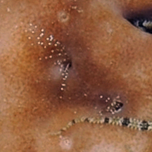

|
|
| barnacles text index | photo index |
| Phylum Arthropoda > Subphylum Crustacea > Class Cirripedia |
| Sponge
barnacle Membranobalanus longirostrum Family Archaeobalanidae updated Mar 2020 Where seen? The tiny feathery feet of this barnacle is sometimes seen in Chocolate sponges. Features: Feet 0.5cm long extended out of holes in the sponge, transparent with tiny white spots. Shell embedded in the sponge and not visible. |
 Pulau Hantu, May 05 |
 Sentosa, Sep 08 |
 Sisters Island, May 08 |
*Species are difficult to positively identify without examination of internal parts.
On this website, they are grouped by external features for convenience of display.
| Sponge barnacles on Singapore shores |
On wildsingapore
flickr
|
| Other sightings on Singapore shores |
| Terumbu Pempang Tengah, Jul 19 |
Cyrene Reef, Aug 12 |
Links
|